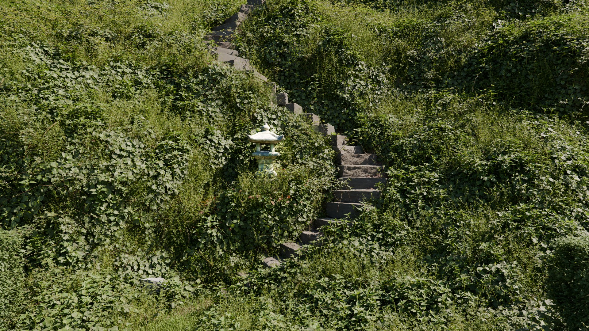
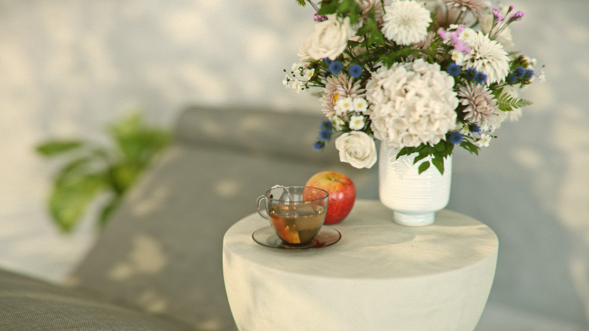
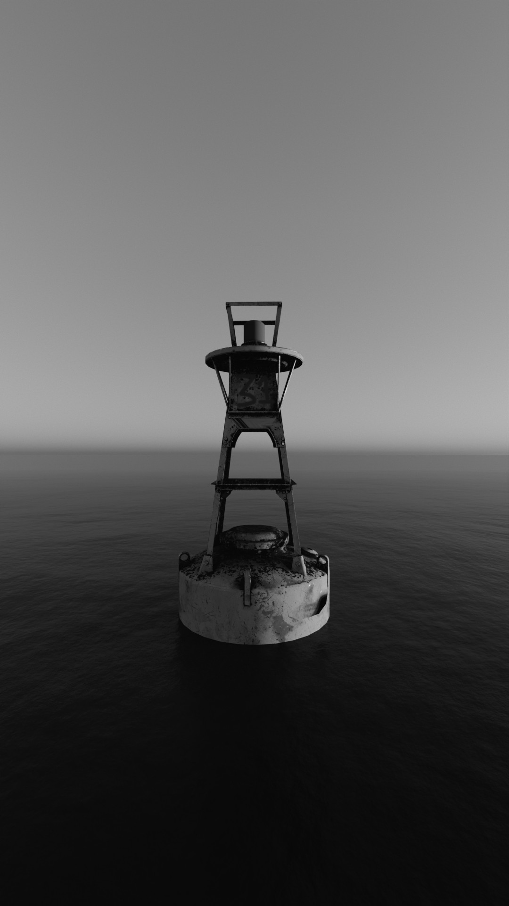
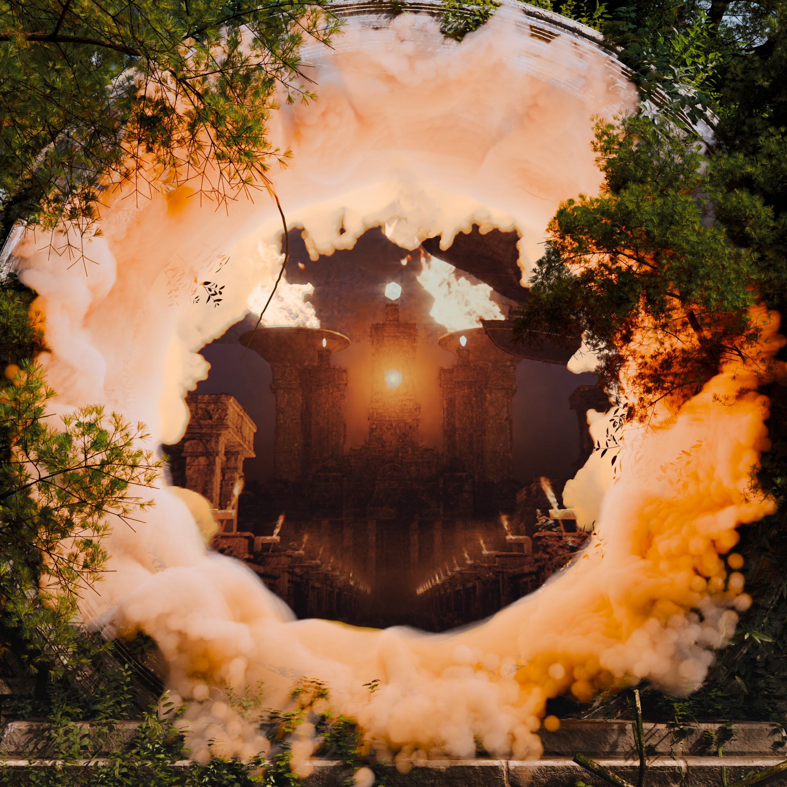
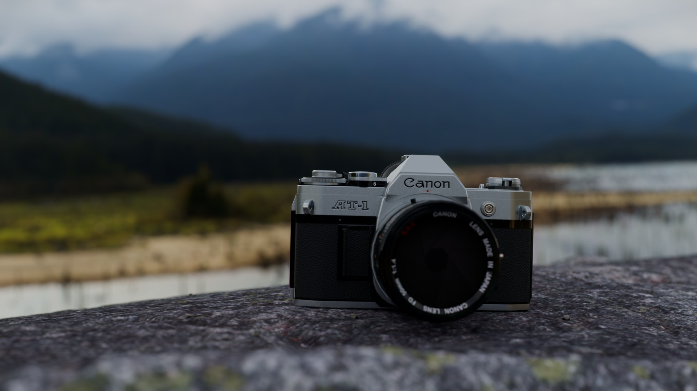
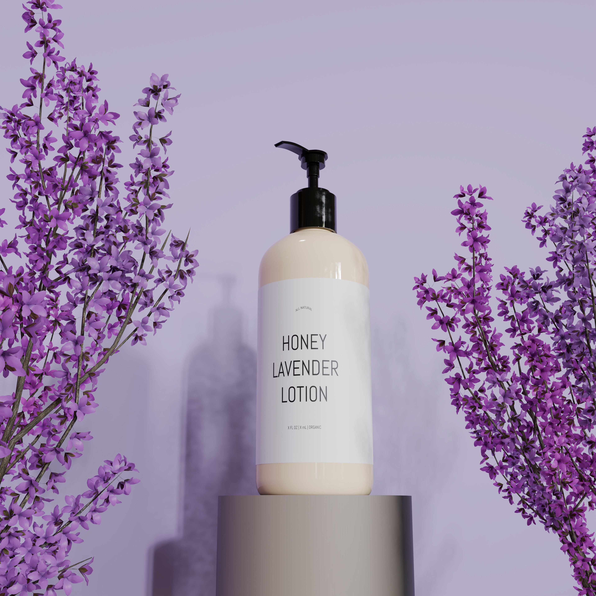
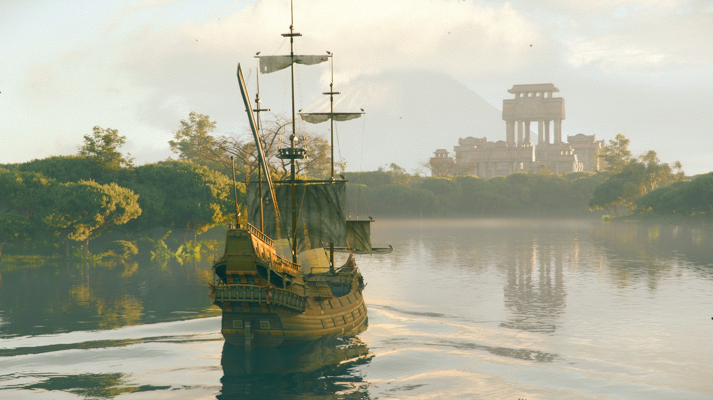

This site is designed for landscape.
Rotate your device or widen your browser window.
A short 3D running sequence made for pwnisher's Kinetic Rush community render challenge. The entire animation was created in Blender and conceived by me. Color grading was done in DaVinci Resolve. BlenderDaVinci ResolveKitBash3D Attributions here.

A realistic 3D render made in Blender attempting to capture the tranquility of lush green gardens. Vegetation addons were utilized; final touchups and color grading done in DaVinci Resolve. BlenderDaVinci Resolve

A realistic 3D render made in Blender capturing the warm, nostalgic feel of summer with a vintage film look. The scene uses premade assets from the BlenderKit add-on; final touchups and color grading done in DaVinci Resolve. BlenderBlenderKitDaVinci Resolve

A black-and-white realistic 3D render made in Blender of a floating buoy lost at sea. The B&W effect was achieved through changing the view transform; final touchups and color grading done in DaVinci Resolve. BlenderDaVinci Resolve

A stylized render made in Blender for the "Secrets of the Luminara" challenge run by KitBash3D. Stylized effects and color grading done in Photoshop; assets from KitBash3D and vegetation addons used. BlenderPhotoshopKitBash3D

A lifelike 3D product render of a Canon camera created in Blender. Final touchups and color grading done in DaVinci Resolve; incorporates assets and photogrammetry elements. BlenderDaVinci Resolve Attributions here.

A lifelike 3D product visualization of a lotion bottle created in Blender. Fully modeled and textured from scratch besides the vegetation. BlenderCycles

An old-style render made in Blender for the "Secrets of the Luminara" challenge run by KitBash3D. Period filter effects and color grading done in DaVinci Resolve; assets from KitBash3D, vegetation addons, and BlenderKit used. BlenderDaVinci ResolveKitBash3D
A realistic 3D product visualization of a Nivea creme tin created in Blender. Fully modeled and textured from scratch. BlenderCycles
A short 3D running sequence made for pwnisher's Kinetic Rush community render challenge. The entire animation was created in Blender and conceived by me. Color grading was done in DaVinci Resolve. BlenderDaVinci ResolveKitBash3D Attributions here.
A realistic 3D render made in Blender attempting to capture the tranquility of lush green gardens. Vegetation addons were utilized; final touchups and color grading done in DaVinci Resolve. BlenderDaVinci Resolve
A realistic 3D render made in Blender capturing the warm, nostalgic feel of summer with a vintage film look. The scene uses premade assets from the BlenderKit add-on; final touchups and color grading done in DaVinci Resolve. BlenderBlenderKitDaVinci Resolve